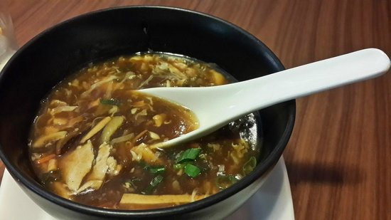

Chicken Soup

Description
Mumbai Chicken Soup is a flavorful and spicy soup that's perfect for warming up on a cold day. Made with chicken,
vegetables, and aromatic spices, this soup offers a hearty combination of tender chicken pieces, fresh herbs,
and a zesty, peppery broth. It's typically served with a squeeze of lime and a sprinkle of fresh coriander,
giving it a tangy kick and a burst of flavor.
Steps
- In a large pot, heat oil and sauté onions, ginger, and garlic until fragrant.
- Add chopped tomatoes, green chilies, and cook until the tomatoes soften.
- Add chicken pieces, coriander powder, cumin powder, and salt, and cook for a few minutes.
- Pour in water or chicken broth, bring to a boil, then simmer until the chicken is tender and the flavors meld.
- Garnish with chopped coriander, lime juice, and serve hot with a side of bread or crackers.